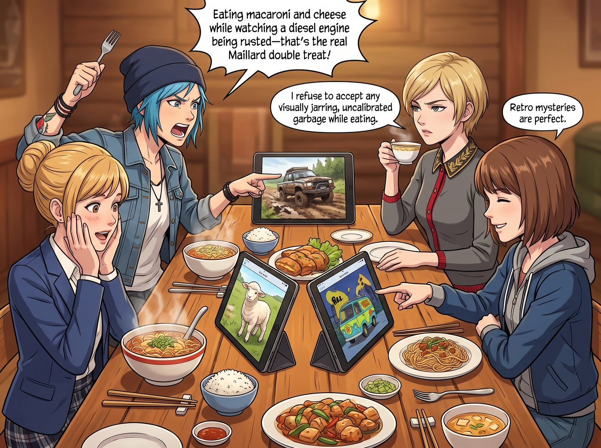

電子榨菜的日常

四個人絕對無法抵擋找下飯視頻的終極誘惑，而且每次開飯前選片的拉扯過程，往往比做飯本身還要精彩。
在二號車廂的小客廳裡，這套吃飯配電子榨菜的日常有著極其鮮明的人設特點。
一、開飯前的選片修羅場
熱騰騰的飯菜剛端上長木桌，四個人的第一反應永遠不是動筷子，而是把 iPad 架在中央，開始一場維度割裂的選片辯論。
Chloe 永遠首推時長十到十五分鐘的極限越野脫困實錄、翻新廢棄五十年拖拉機，或者經典高分 B 級荒謬喜劇。她一邊拿著叉子一邊嚷嚷：「邊吃起司通心粉邊看柴油發動機除銹，這才是真正的美拉德雙重享受！」通常會被全票否決。
Victoria 堅持吃飯必須搭配精緻的古典英劇、歐洲古典園林建築史紀錄片，或是米其林主廚紀錄片。她優雅地端著茶杯：「我拒絕在進食時接受任何畫面粗糙、未經色彩校準的視覺垃圾。」
Kate 喜歡播三到五分鐘一集的治癒系短動畫，或者「蘇格蘭高地小羊救援日常」。每當小動物發出咿呀的叫聲，Kate 就會雙手捧心忘記夾菜。
Max 的收藏夾裡塞滿了九十年代復古經典動畫，或者二十多分鐘的太平洋西北懸案解密。
二、最終的黃金妥協陣容
在漫長的生活磨合中，四人逐漸摸索出了能讓全員安穩吃飯的下飯神作公約數。
經典復古家庭情境喜劇——節奏明快、每集二十多分鐘剛好吃完一頓飯，笑點密集，所有人都能邊嚼披薩邊跟著爆笑。
硬核微縮模型與古董修復短片——十到十五分鐘一集、全程無人說話只有清脆白噪音的「修復十八世紀瑞士老八音盒」或「手工打造微縮火車站」。Chloe 滿意於機械結構；Victoria 滿意於工藝奢華與安靜；Max 沉迷於微距光影；Kate 覺得聲音無比放鬆。
三、沉浸式吃飯名場面
一旦視頻開始播放，長木桌前的畫風就會變得極其好笑。
看到劇中主角即將接吻或拆穿反派時，四個人的叉子會懸在半空，嘴巴微張，連咀嚼都自動切換成靜音模式。
Victoria 起初總是一臉傲嬌地宣稱「我只是陪你們隨便看看」，結果看到第二季時，往往是她第一個按暫停鍵質問：「等等！那個律師為什麼要背叛女主？！Price，快把下一集點開！」
如果 Chloe 提前看過這部劇試圖劇透，Max 會第一時間把一塊大蒜麵包塞進她嘴裡，Kate 則會笑瞇瞇地給她倒滿可樂封口。
每當窗外暮色降臨，二號車廂的小屏幕亮著溫暖的光，四個人裹著毛毯、捧著大碗，在屏幕裡傳來的笑聲與食物的熱氣中有一搭沒一搭地吐槽劇情——這份跨越了所有審美偏好的下飯日常，早已成為這間工坊最踏實、最溫暖的靈魂調味劑。